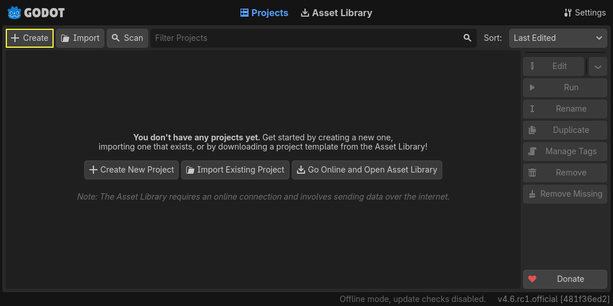
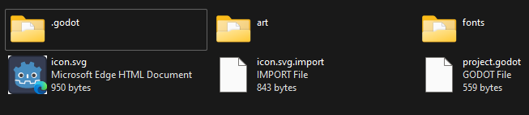
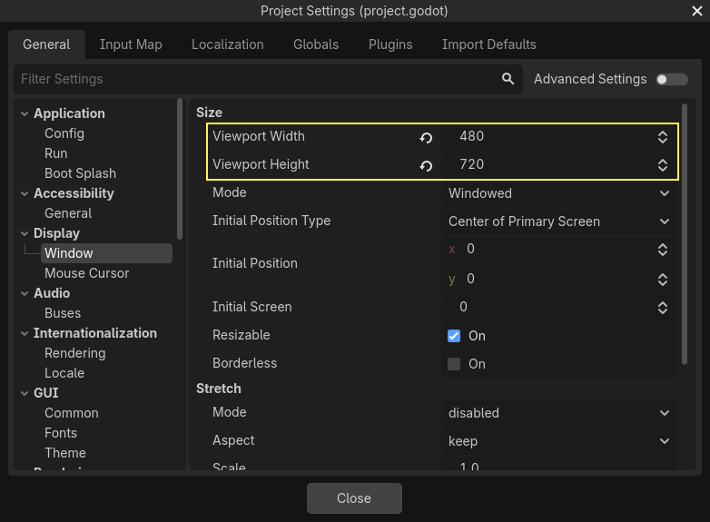
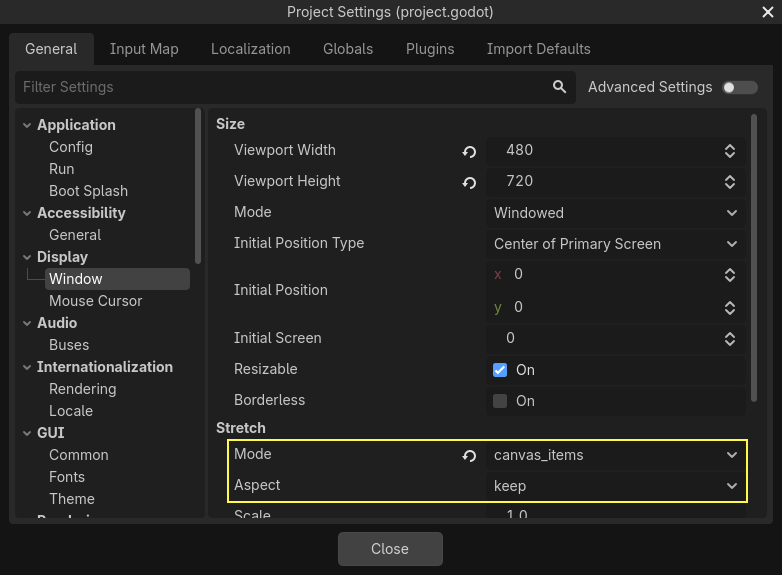

Thiết lập dự án
Trong phần đầu ngắn này, chúng ta sẽ thiết lập và tổ chức dự án.
Khởi chạy Godot và tạo một dự án mới.

Khi tạo dự án mới, bạn chỉ cần chọn một Project Path hợp lệ. Bạn có thể giữ nguyên các cài đặt mặc định khác.
Tải về dodge_the_creeps_2d_assets.zip. File nén này chứa các hình ảnh và âm thanh bạn sẽ dùng để làm game. Giải nén và di chuyển các thư mục art/ và fonts/ vào thư mục dự án của bạn.
Tải về dodge_the_creeps_2d_assets.zip. File nén này chứa các hình ảnh và âm thanh bạn sẽ dùng để làm game. Giải nén và di chuyển các thư mục art/ và fonts/ vào thư mục dự án của bạn.
Đảm bảo bạn đã có các phụ thuộc cần thiết để dùng C# trong Godot. Bạn cần .NET SDK ổn định mới nhất và một trình soạn thảo như VS Code. Xem Yêu cầu trước.
Phần C++ của bài hướng dẫn này chưa được viết lại cho hệ thống GDExtension mới.
Thư mục dự án của bạn sẽ trông như thế này.

Game này được thiết kế cho chế độ màn hình dọc, vì vậy chúng ta cần điều chỉnh kích thước cửa sổ game. Nhấp vào Project -> Project Settings để mở cửa sổ cài đặt dự án, ở cột bên trái mở tab Display -> Window. Tại đó, đặt "Viewport Width" thành 480 và "Viewport Height" thành 720. Bạn có thể thấy menu "Project" ở góc trên bên trái.

Ngoài ra, trong các tùy chọn Stretch, đặt Mode thành canvas_items và Aspect thành keep. Điều này đảm bảo game co giãn đồng nhất trên các màn hình có kích thước khác nhau.

Tổ chức dự án
Trong dự án này, chúng ta sẽ tạo 3 scene độc lập: Player, Mob và HUD, rồi kết hợp chúng vào scene Main của game.
Trong một dự án lớn hơn, việc tạo các thư mục để chứa các scene và script của chúng có thể hữu ích, nhưng với game tương đối nhỏ này, bạn có thể lưu scene và script trong thư mục gốc của dự án, được ký hiệu bằng res://. Bạn có thể xem các thư mục dự án trong FileSystem dock ở góc dưới bên trái:

Khi dự án đã sẵn sàng, chúng ta có thể thiết kế scene người chơi trong bài tiếp theo.